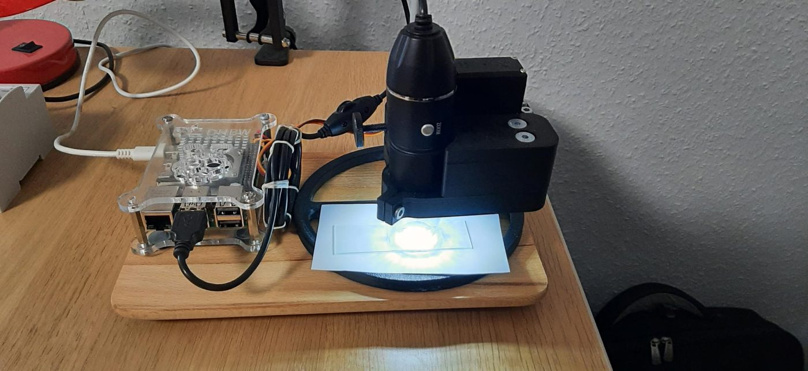
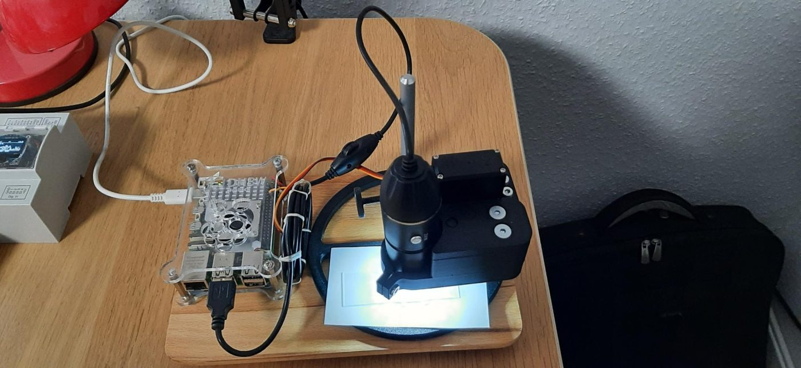
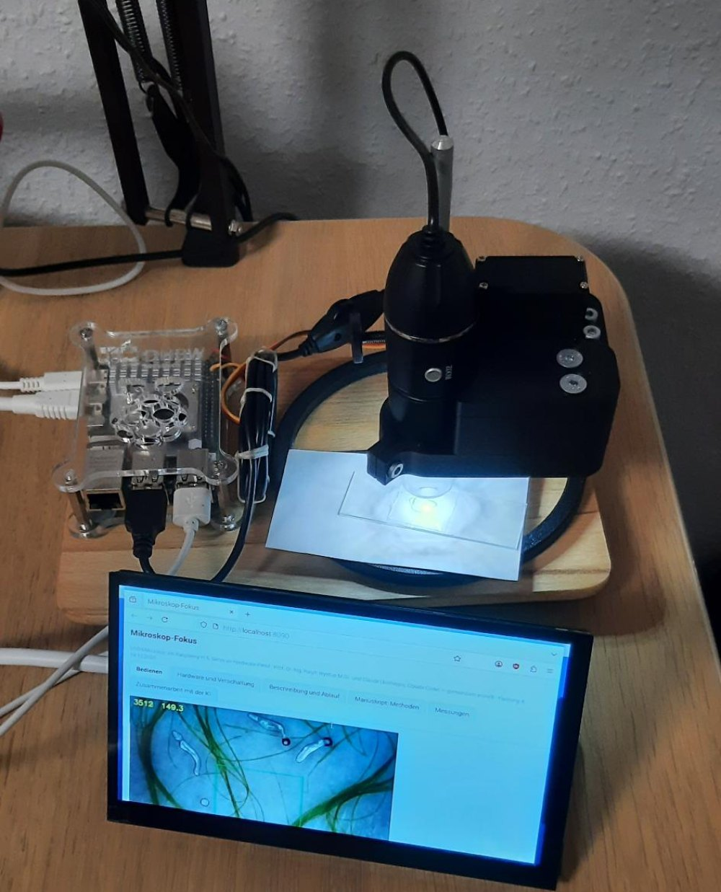
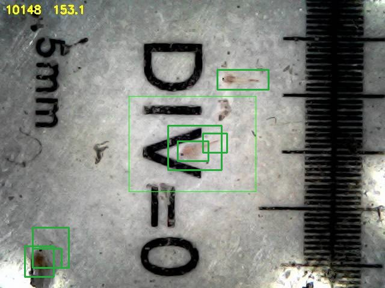
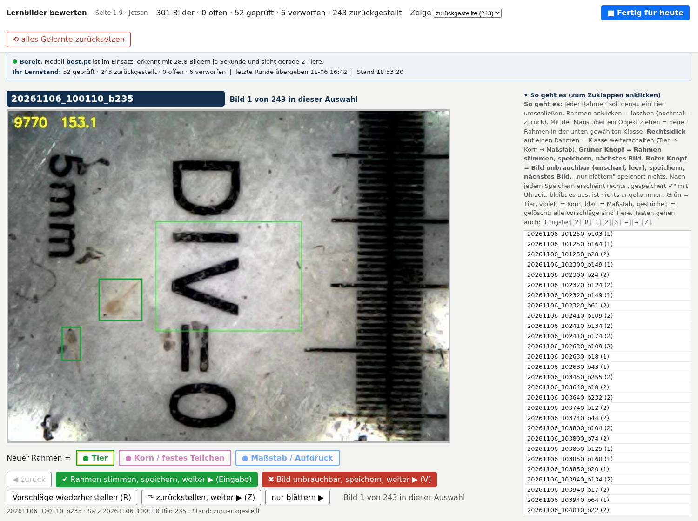
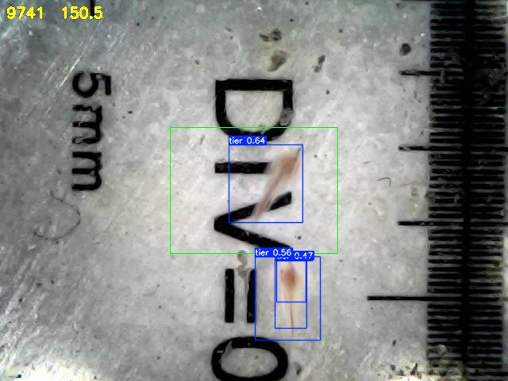
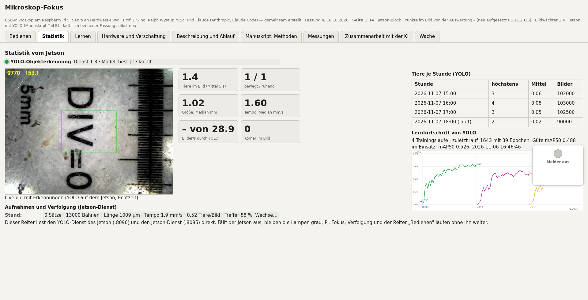

USB-Mikroskop am Raspberry Pi 5, Servo an Hardware-PWM · Prof. Dr.-Ing. Ralph Wystup M.Sc. und Claude (Anthropic, Claude Code) — gemeinsam erstellt · Fassung 4, 18.10.2026 · Seite 1.37 · Manuskript Kap. 20–25, Messungen 06.–14.11. · Selbsttraining-Block (14.11.2026) · Jetson-Block · Punkte im Bild von der Auswertung – (neu aufgesetzt 05.11.2026) · Bildwächter 1.4 · Jetson mit YOLO (Manuskript Teil B) · lädt sich bei neuer Fassung selbst neu
Zoom 1,0× Mausrad zoomt, Ziehen verschiebt, Doppelklick zoomt auf die Stelle — rein elektronisch, nur die Anzeige
–
Hardware-PWM · Haltung im Stand wählbar · jedes Ziel wird von 5° darunter angefahren · Schritte mit kurzem Rütteln · Autofokus: Suchlauf ≈ 25 s, Stapel ≈ 20 s, Anfahrt ≈ 10 s · Nachfokus: nur Stapel ±8° um die jetzige Stellung ≈ 30 s · Ergebnis = Schärfe am Ende gegen die Parabelhöhe des Stapels (100 % = berechnete Spitze).
Tiere im Bild — je Stunde das Höchste
…
Jetson (Zusatzrechner: holt die Aufnahmen, prüft, rechnet die Statistik; ohne ihn läuft alles andere weiter)
Verbindung–
AuslastungCPU –GPU –RAM ––
Arbeit–
Livestrom–
YOLO–
Stand–
Statistik vom Jetson
YOLO-Objekterkennung–
Livebild mit Erkennungen: nicht verbunden
–
Tiere im Bild (Mittel 5 s)
–
bewegt / ruhend
–
Größe, Median mm
–
Tempo, Median mm/s
–
Bilder/s durch YOLO
–
Körner im Bild
Aufnahmen und Verfolgung (Jetson-Dienst)
Stand–
Tiere je Stunde (YOLO)
Stunde
höchstens
Mittel
Bilder
–
Lernfortschritt von YOLO
–
Selbsttraining von YOLO (Jetson, nachts 03:00 oder auf Knopf)
––
Drift–
Marken–
Training–
Abnahme–
Ergebnis–
Aktuelles Bild des Laufs: blau = Bewegung (Punkte des Pi), rot = Farbe, grün = beide zusammen (Lernmarke), gelb = YOLO.
Zeitplan: – · Lebenszeichen –
Lauf
Ergebnis
Treffer alt → neu
–
Dieser Reiter liest den YOLO-Dienst des Jetson (:8096) und den Jetson-Dienst (:8095) direkt. Fällt der Jetson aus, bleiben die Lampen grau; Pi, Fokus, Verfolgung und der Reiter „Bedienen" laufen ohne ihn weiter.
Lernbilder bewerten — die Lernseite des Jetson
Die Lernseite läuft auf dem Jetson und wird hier erst geladen, wenn dieser Reiter offen ist; der Pi hängt nicht daran.
Bedienung: Linksklick auf einen Rahmen löscht ihn, Ziehen zeichnet einen neuen in der gewählten Klasse, Rechtsklick wechselt die Klasse,
grün speichert und blättert, „Fertig" startet das Nachtraining auf dem Jetson (etwa vier Minuten, YOLO pausiert solange).
In eigenem Fenster öffnen
Jetson–
Der Aufbau


Fotos vom 19.10.2026: links der Raspberry Pi 5 im Acrylgehäuse, rechts das USB-Mikroskop im schwarzen 3D-gedruckten Halter; der Servo sitzt oben am Halter und greift mit dem kleinen Zahnrad in das große am Rändelrad. Darunter der Objektträger auf dem Fuß des Mikroskopstativs. Die Beleuchtung erzeugt das USB-Mikroskop selbst mit seinen eingebauten LEDs um das Objektiv (Auflicht). Die Metallstange ist das Stativ: An ihr sind Servomechanik und Mikroskop befestigt; mit der großen Rändelschraube an der Stange wird das Ganze von Hand grob in der Höhe eingestellt, der Servo übernimmt dann die Feineinstellung am Rändelrad.
Ein einfaches USB-Mikroskop (Wandler Genesys Logic 05e3:f12b, 640 × 480 Bildpunkte, 30 Bilder/s, YUYV) hat ein Rändelrad zur Handverstellung der Schärfe. Dieses Rad wird nicht mehr von Hand gedreht, sondern von einem Modellbauservo über ein Zahnradpaar. Die Halterung ist im 3D-Druck gefertigt und trägt Mikroskop, Servo und beide Zahnräder in festem Abstand.
Teil
Angabe
Rechner
Raspberry Pi 5 Model B, 4 GB, Raspberry Pi OS 12 (bookworm), Python 3.11, OpenCV 4.6; Name im Netz mikroskop
Kamera
USB-Mikroskop an USB 2.0, /dev/video0; Regler: Helligkeit, Kontrast, Gamma, Schärfe (bleiben auf Vorgabe)
Beleuchtung
Im Mikroskop eingebaute LEDs rund um das Objektiv (Auflicht), Helligkeit am Rädchen des USB-Kabels; keine zusätzliche Lampe. Die Probe wird von oben beleuchtet, der Hintergrund ist ein weißes Blatt unter dem Objektträger.
Servo
Modellbauservo, Stellbereich 0–180° bei Impulsen von 0,40 bis 2,40 ms, 50 Hz; Signal an GPIO 18 (Hardware-PWM, PWM0-Kanal 2); Versorgung direkt vom 5-V-Pin des Pi, Masse gemeinsam
Stromversorgung
Ein Netzteil für alles: 5,1 V, 3 A am USB-C des Pi (Vorgabe für den Pi 5 sind 5,1 V / 5 A; die 3 A reichen hier, weil nur Kamera und ein Servo hängen). Der Servo zieht beim Fahren kurz einige hundert Milliampere; gemessen stört das weder Kamera noch Pi — am 19.10.2026 nachgesehen: vcgencmd get_throttled = 0x0, keine Unterspannung seit dem Start.
Getriebe
Kleines Zahnrad auf der Servowelle, großes Zahnrad auf der Welle, die das Rändelrad des Mikroskops mitnimmt: Untersetzung 1 : 2. Ein Grad am Servo sind 0,5° am Mikroskoprad.
Halterung
3D-Druck; Zahnräder und Mitnahme am Rändelrad sind die Stellen, an denen das gemessene Spiel von 4,6° (am Servo) entsteht
Stativ
Metallstange, an der Servomechanik und Mikroskop zusammen sitzen; die große Rändelschraube an der Stange stellt das Ganze von Hand grob in der Höhe ein, danach stellt nur noch der Servo
Verschaltung
Was das Getriebe für die Regelung bedeutet
Die Untersetzung halbiert die Bewegung: 0,3° Servoschritt sind 0,15° am Rändelrad. Die Halbwertsbreite des Schärfegipfels von 1,4 bis 3° am Servo entspricht 0,7 bis 1,5° am Rad. Das Spiel von 4,6° am Servo (2,3° am Rad) ist größer als der Gipfel; darum muss jede Anfahrt aus derselben Richtung kommen, sonst landet der Servo neben dem Gipfel, obwohl der Befehl stimmt. Die Rückstellkraft, die den Servo im Stand knurren lässt, kommt aus Mikroskopmechanik und Zahneingriff; sie ist mit dem gewählten Aufbau nicht zu beseitigen, nur zu beherrschen (Haltung wählbar).

Der Aufbau mit dem Bildschirm. Auf dem Schirm läuft dasselbe Livebild, das diese
Seite zeigt; die Zahlen oben links im Bild sind Schärfe und Servowinkel, die das Programm in
jedes Einzelbild einbrennt. Auf dem Schirm des Pi selbst läuft seit dem 03.11.2026 die
Vollbildansicht (vollbild.html) — diese Seite hier bleibt unverändert.
Was das Programm ist
Auf dem Raspberry Pi läuft autofokus4.py als Dienst (mikroskop-fokus.service, startet beim Hochfahren). Es liest das USB-Mikroskop (640 × 480, 30 Bilder/s), berechnet für jedes Bild ein Schärfemaß, fährt den Servo über die Hardware-PWM des Pi 5 und liefert diese Seite unter http://mikroskop:8090 aus. Der Browser zeigt nur an und schickt Befehle; alles Messen und Regeln geschieht im Programm.
Die Bedienelemente
Element
Was es tut
Livebild
Bild der Kamera mit Schärfezahl, Servowinkel und dem grünen Messfenster (ROI, mittlere 33 % jeder Kante).
Zoom
Elektronischer Zoom 1× bis 6× nur in der Anzeige: Schieberegler, Mausrad auf dem Bild, Ziehen verschiebt den Ausschnitt, Doppelklick zoomt auf die Stelle, „1×" und „Mitte" setzen zurück. Die Kamera liefert weiter 640 × 480; die Schärfemessung bleibt im vollen Bild, der Zoom ändert sie nicht.
Autofokus
Voller Ablauf: Suchlauf über den ganzen Bereich, Stapel, Anfahrt, Ergebnis. Etwa 70 s.
Nachfokus
Nur Stapel ±8° um die jetzige Stellung und Anfahrt. Etwa 30 s. Für kleine Änderungen, wenn der Gipfel schon in der Nähe liegt.
Stopp
Bricht den laufenden Ablauf ab; der Servo bleibt, wo er ist.
+ 0,3° / − 0,3°
Ein Handschritt. Beide Richtungen fahren erst 5° nach unten und kommen von unten auf den neuen Wert (etwa 9 s), damit das Getriebespiel immer auf derselben Seite liegt.
Haltung im Stand
stromlos: still, das Getriebe hält durch Reibung, etwa jeder zehnte Handschritt geht daneben. Puls an: der Servo hält aktiv, trifft 12 von 12, knurrt dabei.
Fahre nach
Fährt einen eingegebenen Winkel an, von unten.
Befund für die KI bündeln
Schreibt Zustand, die letzten 60 Protokollzeilen, die letzte Kurve und das aktuelle Bild nach ~/Desktop/messung/befund_<Zeit>/. Das ist das Paket, das die KI zur Analyse liest (Reiter Zusammenarbeit).
Kurve
Schärfe über dem Winkel aus dem letzten Suchlauf oder Stapel; der rote Strich ist der berechnete Gipfel.
Protokoll
Jede Meldung des Programms mit Uhrzeit; dieselben Zeilen stehen in ~/Desktop/messung/autofokus4_<Datum>.log, alle Messpunkte in der .csv daneben.
Der Ablauf „Autofokus"
Suchlauf. Der Servo fährt auf 0°, dann gleichmäßig mit 8°/s bis 180°. Alle 0,3° wird die Schärfe notiert. Das Maximum dieser Kurve nennt die Gegend des Gipfels; wegen des Nachlaufs von Servo und Kamera liegt der wahre Gipfel einige Grad darunter. Ist das Maximum kleiner als das Dreifache des Medians (Fuß), gibt es keinen Gipfel und der Lauf endet mit Meldung.
Stapel. Der Servo fährt 12° unter die Gegend und steigt in Schritten von 0,3°. Jeder Schritt: Puls an, 150 ms Rütteln ±0,6°, Ziel setzen, 250 ms Ruhe, Schärfe als Mittel aus zwei Bildern. Sobald die Schärfe nach dem Maximum unter 40 % gefallen ist, endet der Stapel. Durch die sieben Punkte um das Maximum wird eine Parabel gelegt; ihr Scheitel ist der Gipfelwinkel, ihre Höhe die Bezugsgröße 100 %.
Anfahrt. Der Servo fährt 5° unter den Gipfel und steigt von dort, zuerst in 0,3°-, nahe dem Ziel in 0,2°-Schritten. Er hält an, sobald die gemessene Schärfe mindestens 92 % der Parabelhöhe erreicht. Fällt die Schärfe stattdessen nach dem Überschreiten von 60 % wieder unter 70 % des bisher Besten, ist der Gipfel überfahren; dann ein zweiter Versuch.
Ergebnis. Die Haltung wird eingestellt (stromlos oder Puls an), nach 0,4 s wird die Schärfe aus sechs Bildern gemittelt und als Anteil der Parabelhöhe gemeldet. Ab 85 % heißt es BESTANDEN, sonst NICHT ERREICHT mit der ehrlichen Zahl.
Warum so und nicht einfacher
Alle Regeln stammen aus Messungen am Gerät am 18.10.2026 (Reiter Messungen): Software-PWM zittert, darum Hardware-PWM. Das Getriebe hat 4,6° Spiel, darum immer von unten. Kleine Schritte aus dem Stand bleiben hängen, darum das Rütteln. Der Servo läuft dem Befehl nach, darum 250 ms Ruhe vor jeder Messung und die Trennung von Suchlauf und Stapel. Der befohlene Winkel ist nie die Ist-Lage, darum entscheidet am Ende nur die gemessene Schärfe.
Der zweite Teil: die Zucht beobachten
Seit Anfang November hängt an derselben Kamera eine zweite Aufgabe. Der Pi beobachtet eine Salzkrebszucht,
und ein Jetson Orin Nano daneben erkennt die Tiere mit einem angelernten Netz. Die Arbeit ist geteilt, und
zwar so, dass der Pi nie auf den Jetson wartet.
Gerät
Aufgabe
läuft als
Raspberry Pi 5
Bild aufnehmen, scharf stellen, Bewegung erkennen, Aufnahmen schreiben, diese Seite ausliefern, Tiere verfolgen
Fällt der Jetson aus, bleiben in dieser Seite nur die Lampen grau. Aufnahme, Schärfe, Verfolgung und der
Reiter „Bedienen" laufen weiter. Das ist Absicht und wird bei jeder Prüfung nachgewiesen.
Wie YOLO sehen lernt
YOLO ist ein Erkennungsnetz, das in einem Bild Rahmen um Objekte legt und jedem Rahmen eine Klasse und
eine Sicherheit gibt. Es weiß nichts von Salzkrebsen, bis man es ihm zeigt. Das geschieht in Runden:
Lernbilder ziehen. Aus den Aufnahmen holt der Jetson die Bilder mit den meisten Tieren und legt
Vorschlagsrahmen hinein, aus der Farbwahrheit und aus der Verfolgung. Das sind Vorschläge, keine Wahrheit.
Bewerten. Im Reiter „Lernen" wird jedes Bild durchgesehen: falsche Rahmen anklicken und löschen,
fehlende mit der Maus ziehen, die Klasse mit der rechten Maustaste wechseln (Tier, Korn, Maßstab). Dieser
Schritt ist der einzige, den keine Maschine übernehmen kann, und er bestimmt alles Weitere.
Fertig drücken. Der Jetson baut daraus einen Datensatz (85 Teile zum Lernen, 15 zum Prüfen),
hält den Livedienst an, trainiert etwa vier Minuten auf der Grafikeinheit und startet den Livedienst mit dem
neuen Modell. Die Seite sagt während dieser Zeit, woran sie ist.
Nachsehen. Im Reiter „Statistik" steht die Lernkurve: die Güte mAP50 je Epoche, ein Zug je
Trainingslauf, mit der Zahl der bewerteten Bilder darunter. Daran ist zu sehen, ob eine Runde etwas gebracht hat.
mAP50 ist das übliche Maß für solche Netze: der Anteil richtig gefundener Objekte, gemittelt über die
Klassen, wobei ein Rahmen als richtig gilt, wenn er sich zu mindestens der Hälfte mit dem von Hand gezogenen
deckt. 1,0 wäre fehlerfrei.
Was die Zahlen im Reiter „Statistik" bedeuten
Feld
Bedeutung
Tiere im Bild (Mittel 5 s)
wie viele Tiere YOLO gerade sieht, geglättet über fünf Sekunden
bewegt / ruhend
Trennung bei 0,2 mm/s. Ruhende Tiere sind der schwierige Teil, sie fehlen der Bewegungserkennung
Größe, Median mm
längste Rahmenseite mal Maßstab. Das Längenmaß ist Rumpf plus Schwanz
Tempo, Median mm/s
aus dem Weg des Rahmenmittelpunkts zwischen zwei Bildern
Bilder/s durch YOLO
Durchsatz des Livedienstes. Liegt er deutlich unter der Bildrate der Kamera, kommt der Jetson nicht nach
Tiere je Stunde
Zähler des Livedienstes über 72 Stunden: höchstens gleichzeitig, Mittel je Bild, Zahl der Bilder
Das Livebild daneben zeigt denselben Strom, den YOLO gerade rechnet, mit den eingezeichneten Erkennungen.
Es ist keine Aufzeichnung und kein Standbild: was dort steht, hat das Netz in dieser Sekunde gefunden.
Was man im Betrieb tut
Im Alltag genügt ein Blick auf die Bereit-Zeile im Reiter „Lernen" und auf die Lampen im Reiter
„Statistik". Arbeit entsteht nur an zwei Stellen: Lernbilder bewerten, solange die Güte noch steigt, und
eingreifen, wenn eine Lampe grau bleibt. Alles andere räumt sich selbst auf, auch die Videos auf dem Jetson.
1 · Das Schärfemaß
Ein scharfes Bild hat steile Kanten, ein unscharfes flache. Das Maß dafür ist die Energie des Bildgradienten. Im Messfenster (ROI) wird das Graubild I(x,y) mit den Sobel-Kernen gefaltet:
und das Tenengrad-Maß ist der Mittelwert der quadrierten Gradientenlänge:
S = (1/N) · ΣROI ( Gx² + Gy² )
Es wird nicht normiert und nicht begrenzt. Das frühere Programm teilte durch 15 000 und schnitt bei 1,0 ab; dadurch wurde der Gipfel zu einem Plateau von mehr als 10° Breite, in dem der Regler das Maximum nicht sehen konnte. Pertuz, Puig und García (Pattern Recognition 46, 2013) vergleichen 36 Schärfeoperatoren; Tenengrad gehört zu den dreien mit dem besten Verhältnis von Empfindlichkeit zu Rauschfestigkeit. Gemessen am Gerät: Streuung von Bild zu Bild ohne Bewegung 0,7 bis 2,6 % des Mittelwerts, Fuß (weit außerhalb des Fokus) etwa 200, Gipfel etwa 9 000, also ein Verhältnis von 45 : 1.
Beleuchtung und Schärfemaß
Das USB-Mikroskop beleuchtet die Probe selbst: LEDs um das Objektiv werfen Auflicht von oben, die Helligkeit wird am Rädchen des Kabels eingestellt, darunter liegt ein weißes Blatt als Hintergrund. Für das Schärfemaß heißt das zweierlei. Erstens hängt die Gradientenenergie quadratisch vom Kontrast ab: Wird die Beleuchtung geändert, ändern sich alle Schärfewerte um denselben Faktor, der Gipfel bleibt am selben Winkel. Darum werden im Programm nur Verhältnisse verwendet (Anteil an der Parabelhöhe, Abfall unter 40 % des Maximums), nie absolute Schwellen — mit einer Ausnahme, dem Mindestwert 1 000 für „es gibt einen Gipfel", der bei dieser Beleuchtung weit unter dem Gipfel (etwa 9 000) und weit über dem Fuß (etwa 200) liegt. Zweitens darf die Beleuchtung während eines Laufs nicht verändert werden, sonst vergleicht der Stapel Werte verschiedener Helligkeit; die Kameraregler (Helligkeit, Kontrast, Gamma) bleiben deshalb auf ihrer Vorgabe, und die automatische Belichtung der Kamera bekommt nach jedem Schritt die 250 ms Ruhe, in denen sie sich einschwingt. Spiegelungen der LEDs auf einem nassen Präparat erzeugen harte Kanten und können das Maß verfälschen; die Mitte-ROI von 33 % hält den Rand des Bildfelds, wo die Reflexe meist liegen, aus der Messung heraus.
2 · Die Form des Gipfels und die Parabel
Die Schärfe über dem Servowinkel a hat bei dieser Probe einen einzigen Gipfel mit Halbwertsbreite 1,4 bis 3° und einem Fuß von 16 bis 20° (ab 5 % der Höhe). Nahe dem Scheitel ist jede glatte Kurve durch ihre Taylor-Entwicklung zweiter Ordnung beschrieben, also eine Parabel:
Die Koeffizienten kommen aus der Methode der kleinsten Quadrate über die sieben Stapelpunkte um das gemessene Maximum (drei links, drei rechts). Gültig ist die Anpassung nur für p0 < 0 (nach unten offen); sonst bleibt das gemessene Maximum der Gipfel. Der Scheitel liegt zwischen den Rasterpunkten und ist genauer als der Rasterabstand 0,3°; die Höhe S* ist die Bezugsgröße, auf die das Ergebnis in Prozent bezogen wird. Deshalb kann ein Ergebnis knapp über 100 % liegen, wenn die Anfahrt zufällig näher an der wahren Spitze hält als die Parabel schätzt.
3 · Der Servo und seine Ansteuerung
Ein Modellbauservo stellt den Winkel nach der Breite eines Impulses, der alle 20 ms (50 Hz) wiederholt wird. Für diesen Servo gilt die lineare Zuordnung
tPuls(a) = 0,40 ms + (a / 180°) · 2,00 ms , a ∈ [0°, 180°]
also 11,1 µs je Grad. Die Impulse erzeugt die Hardware-PWM des RP1-Bausteins (GPIO 18 = PWM0-Kanal 2, Freigabe über dtoverlay=pwm-2chan); Periode und Tastdauer werden in Nanosekunden geschrieben, die Auflösung ist damit weit feiner als der Totbereich des Servos. Software-PWM aus dem Benutzerraum (RPi.GPIO über lgpio) hat Impulsbreitenschwankungen im Bereich einiger Mikrosekunden, die der Servo als Sollwertänderungen von Bruchteilen eines Grads deutet und dauernd nachregelt: gemessen ±47 bis 63 % Schärfeschwankung im Stand gegenüber ±0,7 bis 0,9 % mit Hardware-PWM. Mit der Untersetzung 1 : 2 wird aus 11,1 µs je Servograd 22,2 µs je Grad am Rändelrad.
4 · Spiel, Hysterese und die Regel „immer von unten"
Zwischen Servoabtrieb, Zahnradpaar und Rändelrad liegt Spiel. Modell: die Ist-Lage aist folgt dem Befehl a um einen richtungsabhängigen Betrag b versetzt,
aist = a − b↑ beim Aufwärtsfahren , aist = a + b↓ beim Abwärtsfahren , b↑ + b↓ ≈ 4,6°
Gemessen als Abstand der Gipfel im langsamen Hin- und Rücklauf: 4,6° (Hardware-PWM, 0,2° je 150 ms). Rütteln während der Fahrt verringert den Wert nur auf 3,2°; es ist mechanisches Spiel. Wird jedes Ziel ausschließlich aufwärts angefahren, ist b konstant und fällt aus allen Differenzen heraus: Gipfelwinkel und Anfahrt sind dann im selben Koordinatensystem. Das ist die Regel von Knapper et al. (Journal of Microscopy 2022) für das OpenFlexure-Mikroskop, dort mit 137 Schritten Spiel am Schrittmotor. Darum beginnt jede Anfahrt 5° unterhalb des Ziels, und auch der Handschritt „−0,3°" fährt 5° hinunter und kommt von unten.
5 · Haftreibung und das Rütteln
Ein kleiner Schritt aus dem Stand muss die Haftreibung überwinden, die größer ist als die Gleitreibung (Stick-Slip). Gemessen mit Hardware-PWM: ein Schritt von 0,2° bewegt das Bild in 1 von 6 Fällen, 0,3° in 3 von 6, erst 0,5° in 6 von 6. Wird der Sollwert während 150 ms alle 25 ms zwischen a + 0,6° und a − 0,6° gewechselt und dann auf a gesetzt, bricht der Servo los und folgt: 0,2° in 6 von 6, 0,1° in 5 von 6 Fällen. Die Rüttelamplitude bleibt unter dem Spiel, darum ändert sie die Richtung der Vorspannung nicht. Eine Ausnahme ist gemessen: Rütteln am Gipfel, nachdem das Getriebe von unten gespannt wurde, ließ es in einem Schritt um sein Spiel zurückschnappen (Schärfe 8 813 → 193). Seitdem rüttelt kein Schritt mehr an der Stelle, jeder Handschritt nimmt den Umweg von unten.
6 · Nachlauf und Messzeitpunkt
Servo und Kamera folgen dem Befehl verzögert. Im schnellen Lauf (6°/s, 0,25° je 40 ms) erschien der Gipfel hin bei 140,75° und zurück bei 136,0°; im langsamen Lauf mit Software-PWM an derselben Stelle. Der Unterschied von 4,75° war Nachlauf, kein Spiel: Der Befehl war dem Servo voraus, die Kamera dem Bild um ein bis zwei Bilder hinterher. Daraus folgt: nach jedem Schritt 250 ms Ruhe, dann zwei Bilder verwerfen, dann messen; und der schnelle Suchlauf liefert nur die Gegend, nie den Gipfel. Die Umkehrprobe bestätigte es: nach 0,2°-Schritten im 120-ms-Takt stand der Servo 1,4° hinter dem Befehl.
7 · Der Regler als Ganzes
Die Aufgabe ist, das Maximum einer unbekannten, eingipfligen Funktion S(a) mit einem Stellglied zu finden, dessen Ist-Lage nicht messbar ist. Der Suchlauf tastet S grob über den ganzen Bereich ab (Kosten: 25 s, Gewinn: keine Annahme über die Lage). Der Stapel misst S im Fuß des Gipfels auf dem 0,3°-Raster und liefert über die Parabel Scheitel und Höhe. Die Anfahrt schließt den Kreis über die Messgröße selbst: Sie endet nicht am berechneten Winkel, sondern dort, wo S ≥ 0,92 · S* gemessen wird. Damit ist das Ergebnis gegen Spiel, Nachlauf und Streuung der Ist-Lage unempfindlich, denn alle drei wirken nur auf den Winkel, nicht auf die Schärfe. Zahlen vom 18.10.2026: sechs Läufe hintereinander, Ergebnis 93 bis 105 % der Parabelhöhe, Gipfelwinkel 139,6 bis 140,1°, Dauer 70 s. Nachfokus 30 s.
8 · Halten im Stand
Nach dem Fokus bleibt eine Rückstellkraft auf dem Getriebe. Mit Puls hält der Servo dagegen und regelt hörbar nach (Knurren), die Stellung bleibt: 60 s ohne Sprung, 12 von 12 Handschritten getroffen. Stromlos hält nur die Reibung: 20 s Streuung 0,7 %, aber gelegentlich rutscht das Getriebe um sein Spiel ab, und der nächste Handschritt geht von einer falschen Stellung aus (1 von 10). Beide Haltungen sind auf der Seite wählbar; der Autofokus fährt immer mit Puls und schaltet erst am Ende um.
Quellen
J. Knapper et al., Fast, high-precision autofocus on a motorised microscope: automating blood sample imaging on the OpenFlexure Microscope, Journal of Microscopy 285 (2022); arXiv 2109.06842.
S. Pertuz, D. Puig, M. A. García, Analysis of focus measure operators for shape-from-focus, Pattern Recognition 46 (2013) 1415–1432.
Raspberry Pi Foundation, RP1 PWM und pwm-2chan-Overlay; Raspberry-Pi-Forum zu Servo-Jitter mit Software-PWM.
Teil
B · Die Zucht beobachten: Bildwächter auf dem Pi, Lernen und Erkennen
auf dem Jetson
Fassung 1.0 vom 06.11.2026 · Prof. Dr.-Ing. Ralph Wystup M.Sc.
und Claude (Anthropic, Claude Code) — gemeinsam erstellt. Teil A
(Kapitel 1–8) beschreibt den motorischen Autofokus; Teil B setzt darauf
auf.
9 · Die Aufgabe:
eine Salzkrebszucht überwachen
Salzkrebse (Artemia) sind das Lebendfutter der Aquakultur.
Wer sie zieht, will wissen, wie viele Tiere im Wasser sind, ob sie sich
bewegen, wie groß sie werden und wie schnell. Unter dem USB-Mikroskop
mit dem Autofokus aus Teil A liegt die Probe in einer flachen Schale;
die Kamera liefert 640 × 480 Bildpunkte mit 30 Bildern je Sekunde, ein
Bildpunkt entspricht etwa 10,5 µm in der Schärfeebene (Maßstab aus Teil
A, gültig nur im Fokus).
Daraus folgen vier Messgrößen: Tiere je Bild (daraus
die Dichte), bewegt oder ruhend,
Körperlänge und Tempo. Und zwei
Vorgaben, die den Aufbau bestimmen:
Der Pi läuft allein. Bild, Schärfe, Anzeige,
Aufzeichnung und die einfache Verfolgung der Tiere laufen auf dem
Raspberry Pi 5 und müssen weiterlaufen, wenn alles andere ausfällt — der
zweite Rechner, das Netz zum Arbeitsbereich, die KI-Sitzung.
Der Jetson lernt und erkennt. Ein Jetson Orin Nano
(8 GB, 1024 CUDA-Kerne) liest den Livestrom des Pi mit, sammelt die
Aufnahmen, lässt sich Lernbilder vom Menschen bewerten, lernt daraus ein
YOLO-Modell und liefert die Statistik an die Seite des Pi zurück. Fällt
er aus, fehlt nur die Statistik.
Der Rest dieses Teils folgt dem Weg eines Bildes: vom Pi (Kapitel 10)
über die Datenstrecke (11) zu den Lernbildern (12), dem Training und dem
Livedienst auf dem Jetson (13), zurück auf die Seite (14), geprüft als
Ganzes (15), vermessen (16) und eingeordnet (17).
10 · Der Bildwächter auf dem Pi
Der Bildwächter (Auswertung 1.4) läuft als Dienst neben dem Autofokus
und liest denselben Kamerastrom. Er arbeitet mit Regeln, nicht mit
gelernten Netzen — das macht ihn auf dem Pi schnell (27–28 Bilder je
Sekunde) und ohne Fremdhilfe lauffähig.
Bewegung. Ein Hintergrundmodell aus Gaußmischungen
(MOG2 in OpenCV) hält für jeden Bildpunkt eine Verteilung der zuletzt
gesehenen Grauwerte. Was von der Verteilung abweicht, ist Vordergrund.
Eine morphologische Öffnung tilgt Einzelpunkte, ein Flächenfenster lässt
nur Flecken in der Größe eines Tieres durch (Körperlänge 0,4–1,5 mm,
also 40–150 Bildpunkte).
Aussehen. Ein Fleck gilt als Tier, wenn seine Form
länglich ist (Verhältnis der Hauptachsen) und seine Farbe im Braun der
Artemia liegt (Farbraum HSV, Sättigung und Farbton in einem Fenster).
Körner sind grau und rund, Luftblasen hell.
Verfolgung. Flecken aufeinanderfolgender Bilder
werden nach Nähe zu Bahnen verbunden. Jede Bahn trägt Länge, Tempo
(Verschiebung je Zeit, in mm/s über den Maßstab) und Alter. Die Marken
im Livebild („Punkte”) stammen aus diesen Bahnen.
Aufzeichnung. Sobald Bewegung vorliegt, schreibt der
Pi einen Satz: ein kurzes Video (MJPEG, 640 × 480) und eine Zeilendatei
mit allen Flecken und Bahnen je Bild. Ein Satz dauert einige Sekunden;
am 06.11.2026 entstanden rund 2 200 Sätze. Die Seite zeigt die Punkte im
Livebild, den Zustand des Wächters und die Aufzeichnungen (Teil A,
Reiter „Bedienen”).
Wo die Regeln an ihre Grenze kommen. Ruhende Tiere
sind für ein Bewegungsmodell unsichtbar; der Befund zu Problem 4
(Kapitel 16) zeigt, dass drei Viertel der verpassten Tiere schon am
Vordergrund scheitern, nicht an Form oder Farbe. Ein Versuch, ruhende
Tiere über eine Nachsuche im Aussehen mitzunehmen (Fassungen 1.5–1.8),
erzeugte Marken ohne Tier an grauen Körnern und wurde nach dem
Augenschein zurückgenommen. Die Regelmaschine bleibt bei 1.4; das Lernen
übernimmt der Jetson.
11 · Die Datenstrecke
zwischen Pi und Jetson
Beide Rechner stehen im selben Heimnetz, der Pi im WLAN (2,4 GHz,
Bandwechsel abgeschaltet, Teil A), der Jetson am Kabel. Gemessen am
06.11.2026: Ping 1 ms, Kopieren Jetson → Pi 37 Mbit/s, Livestrom 30
Bilder je Sekunde bei 11 Mbit/s.
Der Jetson-Dienst (Fassung 1.10, ein Python-Programm unter systemd)
tut im Minutentakt vier Dinge:
Schritt
Was geschieht
Warum so
Sätze holen
rsync über SSH-Schlüssel vom
Pi, nur neue Sätze
der Pi schiebt nichts, er wartet auf
niemanden
Farbwahrheit
je Satz eine zweite, langsamere Erkennung
nur nach Farbe und Form (Medianbild als Hintergrund)
unabhängiger zweiter Weg zu den Tieren,
liefert Vorschlagsrahmen
Statistik
alle 5 min über alle Sätze: Bahnen, Länge
(Median), Tempo (Median), Tiere je Bild
Zahlen für die Seite, ohne den Pi zu
belasten
Aufräumen
Videos älter als 3 h löschen, unter 10 GB
frei schon nach 1 h; jeder 10. Satz und eine Haltelist bleiben als
Lernarchiv (bis 6 GB)
Platte voll heißt Dienst tot; Lernbilder
brauchen ihre Videos
Dazu liest der Dienst den Livestrom des Pi dauernd mit (MJPEG,
Wiederverbindung 2–30 s), hält das letzte Bild bereit, nimmt Aufträge
entgegen (Skripte, die der Pi in einen Ordner legt) und gibt Dateien
stückweise über HTTP heraus (Base64, 45 000 Zeichen je Stück, SHA-256 am
Ende). Dieser Auftrags- und Dateiweg braucht kein Kennwort — das war die
Lehre eines Vormittags, an dem der Sicherheitsfilter der KI-Sitzung auf
ein mehrfach ausgelesenes Kennwort ansprang und die Sitzung sperrte.
12 · Lernbilder und die
Lernseite
Ein Modell lernt aus Bildern mit Rahmen. Die Rahmen zeichnet nicht
der Mensch von Null an, sondern die Maschine schlägt sie vor und der
Mensch korrigiert:
Auswahl der Bilder. Je Satz die drei tierreichsten
Bilder, mindestens 25 Bilder auseinander, Lernarchiv zuerst; insgesamt
301.
Vorschlagsrahmen. Vereinigung aus Farbwahrheit und
Verfolgung des Pi (Rahmen, die sich zu mehr als 50 % überdecken, werden
verschmolzen), jeder Rahmen um 6 Bildpunkte vergrößert.
Vorsortierung. Die 50 aussagekräftigsten Bilder
(viele Rahmen, hohe Schärfe nach dem Laplace-Maß, höchstens zwei je
Satz) kommen zuerst, der Rest ist „zurückgestellt” und bleibt für
spätere Runden.
Die Lernseite läuft auf dem Jetson und ist mit der
Maus bedienbar: Linksklick löscht einen Rahmen, Ziehen zeichnet einen
neuen in der gewählten Klasse, Rechtsklick wechselt die Klasse (Tier,
Korn, Maßstab), grün speichert und blättert, rot verwirft das Bild. Jede
Bewertung wird sofort als Datei abgelegt, man kann jederzeit aufhören.
Der Knopf „Fertig” meldet dem Dienst das Ende einer
Runde; er baut den Datensatz und startet das Training (Kapitel 13).
Die erste Runde am 06.11.2026: 52 Bilder geprüft mit 209 Tier-, 14
Korn- und 12 Maßstabsrahmen, 6 Bilder verworfen, 243 zurückgestellt.
Eine Lehre aus der ersten Fassung der Seite: ein Knopf „weiter”, der
nicht speichert, kostet eine halbe Stunde Arbeit — seit Fassung 1.3
speichert jeder grüne Knopf.

Lernbild mit den vom Verfasser bewerteten
Rahmen (Tiere grün; Körner orange und Maßstab blau, hier nicht im
Bild)

Die Lernseite auf dem Jetson mit echten
Daten: Bild 55 des Satzes von 11:15 Uhr, Stand 52 geprüft, Filter
„geprüfte”
13 · YOLO auf
dem Jetson: Datensatz, Training, Livedienst
Datensatz. Nur geprüfte Bilder (und offene mit
Vorschlagsrahmen, wenn man es will), nie verworfene oder
zurückgestellte. Die Rahmen gehen in das YOLO-Format (Klasse, Mitte,
Breite, Höhe, normiert), die Aufteilung in Lern- und Prüfbilder folgt
dem MD5-Hash des Bildnamens (85 : 15), damit sie bei jeder Runde gleich
bleibt.
Modell. YOLOv8n (3,2 Mio. Parameter) aus
ultralytics, Eingabe 640 Bildpunkte, Stapel 8, 40 Epochen
mit frühem Halt (15 Epochen ohne Gewinn). Ein Lauf mit 52 Bildern dauert
auf dem Jetson 3,5 min. Die Güte wird als mAP@0,5 auf den Prüfbildern
angegeben — der Mittelwert der Präzision über die Trefferquote, wobei
ein Rahmen als Treffer gilt, wenn er den wahren Rahmen zu mindestens 50
% überdeckt (IoU, Schnitt durch Vereinigung):
IoU = |A ∩ B| / |A ∪ B|
Lauf
Bilder (Lern/Prüf)
Rahmen
mAP@0,5
mAP@0,5:0,95
Dauer
Vorschlagsrahmen ohne Mensch
257 / 44
633
0,65
—
12 min
52 bewertete Bilder (Mensch)
43 / 9
235
0,53
0,22
3,5 min
Das zweite Modell ist das ehrlichere: seine Prüfbilder tragen
menschliche Rahmen, nicht die Vorschläge derselben Maschine. Dass die
Zahl mit nur neun Prüfbildern grob ist, liegt auf der Hand; die 243
zurückgestellten Bilder sind die nächste Runde.
Speicher — die Lehren des Tages. Der Jetson hat 7,4
GB, die sich CPU und GPU teilen (vereinheitlichter Speicher,
nvmap). Vier Dinge mussten gelernt werden, jedes an einem
Abbruch:
CUDA braucht beim Start physisch freien Speicher.
Der Seitencache des Dienstes (Videos per rsync, bis 5 GB je Stunde)
zählt nicht als frei → vor jedem GPU-Start
sync; echo 3 > drop_caches über einen Helfer mit
sudoers-Regel.
Eine Speicherobergrenze (MemoryHigh) am Dienst drosselt
auch seine Kinder → Training und Livedienst sind eigene
systemd-Einheiten.
Zwei GPU-Prozesse passen nicht nebeneinander → die Trainingseinheit
hält den Livedienst an (ExecStartPre=+systemctl stop) und
startet ihn danach (ExecStopPost=+systemctl start); die
Seite zeigt solange „YOLO pausiert — Training läuft”.
Der TensorRT-Export hing zweimal am Speicher → kein Export; PyTorch
in halber Genauigkeit liefert 49,8 Bilder je Sekunde, mehr als der Strom
bringt.
Und eine fünfte, systemd-eigene: Mit User= laufen auch
ExecStartPre-Schritte als dieser Benutzer. Der Cache-Helfer
scheiterte still mit „Permission denied”, sichtbar nur im Journal —
Root-Schritte tragen das Präfix +.
Livedienst. Der YOLO-Livedienst (Fassung 1.3) liest
den Livestrom des Pi, lässt jedes Bild durch das Modell und verfolgt die
Rahmen mit ByteTrack (Zuordnung über Bildfolgen, Spur-Nummern). Daraus
je Bild: Tiere, bewegt oder ruhend (Spurgeschwindigkeit über 0,5 s gegen
0,2 mm/s), Körpergröße als längste Rahmenseite mal Maßstab, Tempo als
Median der Spuren, Körner. Ein Stundenzähler hält Höchstwert und Mittel
je Stunde. Der Dienst gibt die Zahlen (/stand) und einen
MJPEG-Strom der Bilder mit eingezeichneten Rahmen, Klasse und
Sicherheit heraus — die Funktionsanzeige in Echtzeit. Gemessen:
28,8 von 28,8 Bildern je Sekunde verarbeitet, Körpergröße 1,0–1,2 mm,
Tempo 0,4 mm/s (16:07 und 16:14 Uhr). Ein neues best.pt
wird im Lauf erkannt und nachgeladen.

YOLO bei der Arbeit (Satz vom 06.11.2026,
17:33 Uhr): blaue Rahmen mit Klasse und Sicherheit aus dem Modell der 52
bewerteten Bilder. Gelb und der grüne Rahmen stammen aus dem Bild des
Pi: Schärfewert, Servowinkel und Messfenster des Autofokus (Teil
A).
Derselbe Satz als Film (5,9 s, 164 Bilder) durch den YOLO-Livedienst:
Rahmen, Klasse und Sicherheit je Bild; der rohe Ausschnitt liegt daneben
(video/clip_roh_2026-11-06.mp4). Auf dem Pi selbst fehlen die Filme, die
Figur blendet sich dann aus.
14 ·
Die Seite: Statistik, Lernen und der Rückfall ohne Jetson
Die Seite des Pi (Teil A) bekam drei Dinge dazu, ohne dass der Reiter
„Bedienen” sich änderte:
Jetson-Block im Reiter „Bedienen”: Verbindung,
Auslastung (CPU, GPU, Speicher, Temperatur), letzter Abgleich,
Livestrom, eine YOLO-Zeile. Eigener Abruf alle 2 s mit eigener
Fehlerbehandlung; nach 6 s ohne Antwort fällt die Lampe, sonst ändert
sich nichts.
Reiter „Statistik”: Lampe und Zustand des
YOLO-Dienstes, das Livebild mit Rahmen (nur geladen, solange der Reiter
offen ist), Kacheln für Tiere je Bild (Mittel über 5 s), bewegt/ruhend,
Größe, Tempo, Bilder je Sekunde, Körner, dazu die Stundentafel und die
Satzstatistik des Jetson-Dienstes. Läuft ein Training, steht dort „YOLO
pausiert — Training läuft seit hh:mm:ss”.
Reiter „Lernen”: die Lernseite des Jetson in einem
Rahmen, geladen erst beim Öffnen und nur, wenn der Jetson antwortet;
sonst ein Satz, der sagt, woran es fehlt. Klicks und der Fertig-Knopf
gehen direkt an den Jetson.
Die Regel dahinter ist Kernforderung 42 des Verfassers: Der
Pi wartet nie auf den Jetson. Jeder Abruf zum Jetson hat ein
eigenes Zeitlimit, nichts anderes auf der Seite hängt daran. Die
Browserprobe P8 (Kapitel 15) stellt den Jetson ab und prüft, dass
Livebild, Fokus und Punkte weiterlaufen.

Reiter „Statistik” mit dem Livebild der
YOLO-Erkennung
15 · Das Zusammenspiel prüfen
Fünf Teile arbeiten zusammen — Pi, Jetson, die Brücke auf dem PC des
Verfassers, der Arbeitsbereich der KI und der Browser. Ein Prüfer
(Fassung 1.5) fährt 17 Schritte ab und schreibt ein Protokoll; die
Sollwerte stehen im Prüfer, nicht im Prüfling.
Schritt
Was belegt wird
P1–P2
Brücke lebt (Puls), Brücke antwortet
P3–P5
Pi erreichbar; Auswertung und Fokus
laufen; Seite und Kiosk mit der erwarteten Fassung
P6–P7
Jetson-Dienst antwortet; Sätze geholt und
gerechnet
P8
Rückfall ohne Jetson im
echten Browser: Seite läuft, Lampe aus, Livebild da
P9–P10
Dateikanal (Prüfsumme) und Auftragskanal
(hier → Pi → Jetson → hier)
P11
Dienste auf Pi und Jetson sind
eingeschaltet und starten von selbst neu
P12
Zugang ohne Kennwort in Befehlen
P13–P14
Geräte arbeiten ohne Zutun weiter; Jetson
sieht den Livestrom
P15–P17
Seite mit Jetson im Browser;
YOLO-Livedienst verarbeitet den Strom; Lernseite mit Zählwerten
Lauf vom 06.11.2026, 16:53 Uhr: 16 von 17 bestanden, P2 fiel an einem
Aussetzer der Brücke (sie holt etwa 5 s nach einem Python-Auftrag für
40–60 s keine Befehle ab, gemessen mit einer Reihe von neun Abfragen)
und wurde durch Wiederholung belegt. Das Protokoll liegt bei. Die Tafel
„Was ohne den Arbeitsbereich weiterläuft” darin ist die Antwort auf die
Vorgabe, dass eine gesperrte KI-Sitzung die Geräte nicht berühren darf:
alles läuft weiter, nur neue Fassungen und Aufträge ruhen.
16 · Was gemessen wurde
(06.11.2026)
Rechenleistung und Strecke.
Größe
Wert
YOLOv8n auf dem Jetson, PyTorch FP16, nach
Leeren des Caches
49,8 Bilder/s
YOLO-Livedienst am Strom des Pi
(Verfolgung eingeschlossen)
28,8 von 28,8 Bildern/s
Livestrom Pi → Jetson
30 Bilder/s, 11 Mbit/s
Kopieren Jetson → Pi (rsync, Pi im
2,4-GHz-WLAN)
37 Mbit/s
Training 52 Bilder, 40 Epochen (früher
Halt bei 39)
215 s
Training 301 Bilder mit
Vorschlagsrahmen
12 min
Speicher auf dem Jetson. Mit FEM-Dienst und Desktop:
317 MB frei, 2,7 GB ausgelagert; ohne beide (abgeschaltet am Abend):
1,64 GB frei, 4,77 GB verfügbar, 0,29 GB ausgelagert. Das Training
brauchte 5,8 von 7,4 GB.
Problem 4 — warum der Pi Tiere verpasst. Gegen die
Farbwahrheit als zweiten Weg: von den verpassten Tieren scheiterten
75 % am Vordergrund (MOG2), nicht an Form oder Farbe;
die Farbwahrheit selbst kennt keine ruhenden Tiere (Medianbild). Ruhende
Tiere zeigen im Stand eine Bilddifferenz von 12,5 Graustufen
(Antennenschlag), Körner 3,9 — ein brauchbares Lebenszeichen, das aber
in der Nachsuche (1.8) keinen Gewinn brachte, solange die Suche selbst
an grauen Körnern hing.
YOLO am Strom. 16:07 Uhr: Körpergröße 1,01 mm, Tempo
0,42 mm/s; 16:14 Uhr: 1,22 mm bei 26,3 Bildern/s; um 18:20 Uhr nur noch
0–1 Tiere je Bild im Strom, während die Farbwahrheit in denselben Sätzen
4 „Tiere” zählte — sie zählt Körner mit. Für die Bilder dieses
Manuskripts wurde darum der Satz mit den meisten
YOLO-Tieren gewählt, nicht der mit den meisten
Farbtreffern.
17 · Einordnung
OASIS (openUC2) im Helmholtz-Projekt SOOP: offene
Planktonkamera mit Dunkelfeld und Tiefenlernen auf einem Jetson —
derselbe Rechner, derselbe Gedanke, nur ohne Autofokus und ohne die
Zuchtaufgabe.
ARTiMiS (Gincley u. a., 2024): Flusszelle mit
Kamera und Netz, Zählung je Milliliter; die Dichte je Volumen fehlt uns
noch (offene Frage in Kapitel 18).
SnappArt (INVE mit Aris): Zählung von Nauplien in
der Brüterei — der kommerzielle Maßstab für die Aufgabe.
Wang und De Baets (Gent, 2019): Marker-CNN zählt
Zysten und Nauplien auf Standbildern mit 99,6 % (ein UNet setzt Marken
auf die Körpermitten, ein zweites Netz prüft jede Marke); Körperlänge
entlang der Mittellinie mit 1,16 % Fehler aus 250 Lernbildern. Daraus
für uns: eine Klasse „Zyste”, die Länge über das Skelett statt über die
Rahmenseite, und die Zählgenauigkeit auf Standbildern gegen die
geprüften Rahmen messen.
18 · Offen
Mehr Lernbilder: 243 zurückgestellte Bilder
bewerten, „Fertig” drücken — der Rest läuft von selbst.
Die Regeln des Pi aus YOLO kalibrieren: der Jetson
vergleicht jede Marke des Pi mit seinen Rahmen und sucht die Schwellen,
die Fehltreffer und Lücken zugleich klein halten (Problem 4). Der Pi
bleibt allein lauffähig.
Dichte je Milliliter: Schalenvolumen und
Schärfentiefe vermessen (Maßstab gilt nur im Fokus).
Lebend oder tot: ruhende Tiere über das
Lebenszeichen (Bilddifferenz im Stand) von Körnern trennen.
Klasse Zyste, Länge über die Mittellinie,
Dunkelfeldbeleuchtung (Kapitel 17).
Ohne Laptop steuern: ein Abholdienst auf dem Pi,
der Aufträge wie die Brücke selbst holt — nur auf Wort des
Verfassers.
19 · Was am 07.11.2026 gemessen wurde
Der 06.11. endete mit einem laufenden Modell und offenen Fragen. Am 07.11. wurden vier davon gemessen.
Die Befunde stehen vollständig in den Blättern BEFUND_PROBLEM1/6/7/9_2026-11-07.md; hier die
Ergebnisse und was sie für das Verfahren bedeuten.
19.1 Die Sicherheitsschwelle des Livedienstes ist zu hoch
Gemessen wurde YOLO gegen die von Hand geprüften Lernbilder, getrennt nach Lern- und Prüfteil und über
drei Sicherheitsschwellen. Eine einzelne Schwelle hätte in die Irre geführt: sie trennt nicht, ob ein Modell
nichts gelernt hat oder ob es unsicher ist.
Schwelle
Trefferquote Prüfteil
Genauigkeit Prüfteil
Trefferquote Lernteil
0,10
62,5 %
53,2 %
77,5 %
0,25
37,5 %
71,4 %
32,5 %
0,40 (Livedienst)
10,0 %
80,0 %
13,0 %
Das Modell hat gelernt, ist aber unsicher. Mit der eingestellten Schwelle 0,40 meldet der Livedienst
etwa jedes zehnte Tier. Das erklärt die niedrigen Livezahlen (0,04 bis 0,10 Tiere je Bild über 18 Stunden)
und ist kein Fehler der Erkennung, sondern eine Einstellung. Die Klassen Korn (14 Beispiele) und Maßstab
(12) hat das Netz gar nicht gelernt: null Funde bei jeder Schwelle. Gent erreicht mit 250 Lernbildern
99,6 %; hier sind es 52.
19.2 Wo die Farbwahrheit blind ist
Von 209 Tier-Rahmen der geprüften Lernbilder hat der Bediener 43 selbst nachgetragen. Jedes fünfte Tier
sieht also keine der beiden Maschinen. Die Farbregel findet 44,5 % seiner Rahmen bei 89,4 % Genauigkeit, von
den nachgetragenen aber nur einen einzigen. Die naheliegende Erklärung — die Sättigungsschwelle sei zu hoch —
wurde geprüft und verworfen: bei der heutigen Schwelle 40 haben bereits 69,8 % der nachgetragenen Tiere genug
gesättigte Bildpunkte. Der Verlust entsteht später. Eine Stufenmessung an 161 Tierrahmen zeigt, wo:
Stufe
es bleiben
Verlust hier
0 · Rahmen des Beobachters
100,0 %
—
1 · Sättigung S > 40 oder dunkler Kopf
98,8 %
1,2 %
2 · Ortsfest-Masken abgezogen
91,3 %
7,5 %
3 · Öffnen, Schließen, Gruppieren
90,1 %
1,2 %
4 · Flächenfenster 150…6000 px
82,0 %
8,1 %
Nach Lage getrennt: über dem schwarzen Aufdruck findet die Regel 79,4 % der Tiere, frei davon 100 %. Der
Verlust an der Ortsfest-Maske beträgt über dem Aufdruck 8,6 % und daneben null. Die Maske löscht die
Aufdruckfläche samt 9 px Rand — und mit ihr die Tiere, die gerade darüber liegen. Der zweite, gleich große
Verlust sitzt im Flächenfenster.
19.3 Dichte Tiere: die Sorge war unbegründet
In 191 214 Bildern aus 1077 Sätzen kamen zwei getrennt verfolgte Tiere in 0,006 % der Bilder einander
näher als 50 px, in keinem näher als 30 px. Von sieben Begegnungen war keine lang genug, um über einen
Nummerntausch zu entscheiden. Die ältere Annahme von 0,7 % war um zwei Größenordnungen zu hoch.
Die andere Hälfte der Frage — verschmelzen zwei Tiere zu einem Rahmen? — kann der Verfolger selbst nicht
beantworten; dafür wurde die Farbwahrheit herangezogen. In 1,09 % der Rahmen liegen zwei oder mehr
Farbgebiete. Der Augenschein an zwölf vergrößerten Fällen zeigt jedoch: neun davon sind ein Tier,
dessen dunkler Rumpf und blasser Schwanz von der Farbregel getrennt werden, weil der Gruppierungsabstand von
15 px nicht reicht. Nur drei enthielten wirklich ein zweites Objekt. Die Rechnung allein hätte hier zu einer
falschen Aussage geführt.
19.4 Lichtfarbe: stabil, aber falsch geeicht
Über 25 Stunden und 160 Sätze schwankt das Verhältnis Blau zu Rot des Hintergrunds um 1,6 %, seine
Sättigung im 99,9. Hundertstel liegt zwischen 133 und 142. Eine Drift des Lichts gibt es nicht. Dafür ist in
keinem der 160 Sätze die Schwelle 40 die beste; die beste liegt durchweg bei 20 bis 30. Die feste 40
kostet im Median 25,8 Punkte Trennkraft. Geändert wurde nichts: die Schwelle ist der Bezugspunkt aller
bisherigen Messungen.
19.5 Die Rechenlast des Pi liegt nicht beim Prozessor
Gemessen über ein Zeitfenster statt aus einer Momentanzeige trägt der Pi 2,12 von 4 Kernen, also 53 %.
Das Lastmittel von 4,3 bis 5,1 entsteht zur Hälfte aus Aufgaben, die nicht rechnen, sondern auf die
Speicherkarte warten: Rückschreibefäden, das ext4-Tagebuch und der Systemprotokolldienst. In einem Fenster
von 20 s standen 44 % der Zeit Aufträge in der Warteschlange der Karte. Geschrieben werden 47 GB am Tag,
17,13 MB je Aufnahmesatz, davon 8,26 MB für die Datei mit den eingezeichneten Rahmen, die kein
Auswertungsprogramm liest und die nach drei Stunden gelöscht wird.
19.6 Was daraus folgt
Mehr Lernbilder bewerten. Alles andere ist zweitrangig, solange das Netz aus 52 Bildern lernt.
Die Schwelle des Livedienstes von 0,40 auf 0,25 senken. Eine Zahl, sofort umkehrbar, dreifache Ausbeute.
Ortsfest-Maske, Flächenfenster und Gruppierungsabstand der Farbregel überprüfen — erst messen, dann ändern.
Die Datei mit den eingezeichneten Rahmen nicht mehr mitschreiben, sondern bei Bedarf zeichnen.
20 ·
Nachtrag 09.11.2026: der Absturz der Nacht und was daraus wurde
Befund. In der Nacht vom 08. auf den 09.11. fror der
Pi um 01:13 Uhr ein; am Nachmittag davor war das Livebild immer wieder
für Sekunden stehen geblieben. Das Journal des vorigen Starts
(journalctl -b -1) zeigt die Ursache: der Bildwächter 1.4
legt jede Aufnahme über eine Warteschlange auf die Karte, und diese
Warteschlange war unbegrenzt. Bei dichter Tierbewegung
lösten die Aufnahmen schneller aus, als die Karte sie wegschreiben
konnte: der Verzug zwischen Auslösung und Ablage stieg bis auf 2036 s,
über den Lauf standen 18 527 Auslösungen 18 041 Ablagen gegenüber, und
jeder wartende Satz hielt 10–20 MB Bilder im Speicher. Der Prozess wuchs
von 300 MB auf 2,19 GB; der Kern beendete ihn um 21:26 und um 00:10
(beim ersten Mal starb das Journal mit), und um 01:13 war der Speicher
so knapp, dass nichts mehr lief. Das „Stocken“ des Bildes am Nachmittag
war also kein Netzproblem, sondern Auslagern unter Speichernot.
Abhilfe (Bildwächter 1.4_rev2). Erkennung und
Verfolgung sind unverändert — die Rohaufnahme
20261109_095234.avi (440 Bilder) ergibt mit 1.4, rev1 und
rev2 Bild für Bild dieselben Rahmen und Bahnen. Geändert ist nur der
Umgang mit der Last:
die Schreibwarteschlange fasst höchstens drei
Sätze; ein vierter wird verworfen und gezählt
(verworfen), statt den Speicher zu füllen;
veraltete Bilder im Eingangspuffer werden übersprungen und gezählt
(uebersprungen) — der Pi schafft neben Firefox-Kiosk und
Fokusdienst etwa 20 von 28,8 Bildern/s, und rev2 arbeitet die jüngsten
statt alle ab;
eine Speicherwache beendet den Dienst geordnet bei
1,2 GB, systemd startet ihn neu; dazu wirkt erstmals die Dienstgrenze
MemoryMax=1500M, weil der Kern-Speichercontroller
eingeschaltet wurde (cgroup_enable=memory cgroup_memory=1
in cmdline.txt — die Firmware des Pi schaltet ihn sonst ab,
und systemd nimmt die Grenze stillschweigend an, ohne sie
durchzusetzen);
ein Aussetzer-Protokoll meldet jede Lücke der
Hauptschleife über 1 s im Journal und in /stand;
die Zähler liegen auf der Karte: jede volle Stunde
eine Zeile (zaehler_stunden.jsonl), alle fünf Sekunden der
Stand (zaehler.json), beim Start wird die Vorgeschichte
gelesen und zusammengeführt. Vorher waren Stundenverlauf und
Gesamtzähler mit jedem Neustart weg.
Gemessen nach 54 min Betrieb: 62 949 Bilder
verarbeitet, 19,1/s, 32 % übersprungen, 0 verworfen, 0 Aussetzer, 260 MB
Speicher; der Versatz zwischen Bedienen (8090) und Anzeige (8092) fiel
von 0,51 s (Median, 1.4) auf 0,15 s. Ein scheinbarer
Ausreißer von 5,8 s erwies sich als Messfehler: die letzten Bilder des
kürzeren Vergleichsstroms hatten keinen Partner mehr.
Wache entfernt. Der ältere Bildwächter (8091) lief
neben der Auswertung und zählte dasselbe zweimal. Er ist abgeschaltet
und nach ALT_2026-11-09/ verschoben; die Seite
1.35 hat keinen Reiter „Wache“ mehr, die Vollbildzeile
zeigt die Zahlen der Auswertung.
Lernbilder nachziehen. Die Tiere wachsen, und ein
Modell aus Lernbildern vom 06.11. veraltet. Die Lernseite
1.10 hat deshalb den Knopf „100 neue Bilder aus
aktuellem Material“: der Jetson-Dienst 1.13
(POST /lernen/nachziehen) wählt mit
jetson_lernbilder_1.1.py aus den Aufnahmen der letzten
sechs Stunden Bilder, auf denen mindestens zehn Bilder vor und nach dem
gewählten Bild Tiere erkannt wurden — höchstens zwei je Satz, im Abstand
von mindestens 25 Bildern. Jede Runde trägt die Zeitmarke
datensatz (Wachstumsstand); der Datensatzbau
1.2 nimmt alle Marken zusammen und schreibt die
Zusammensetzung (zusammensetzung.json, im Verlauf). Erster
echter Druck 10:27 Uhr: 100 Bilder in 5 s. Das anschließende Training
(398 Bilder, 40 Epochen, 1004 s) hob mAP@0,5 der Klasse Tier von 0,53
auf 0,75; während des Trainings zeigt die Seite „YOLO
pausiert“, danach läuft der Livedienst mit 28 Bildern/s weiter.
Prüfmittel:pruefe_seite_1.35_1.0.js
(19 Proben), pruefe_lernseite_nachziehen_1.0.js (14
Proben), Einzelproben zu Zähler, Warteschlange, Überspringen,
Speicherwache und Vorgeschichte. Rückfälle je ein Befehl:
pi_auswertung_wechsel_1.0.sh 1.4,
seite_1.34_vorher.html, Fassungsdatei
jetson_dienst_1.12.py,
lernen_vorher_1.9.html.
21 · Das
Zusammenspiel genau: zwei unabhängige Erkenner
Die Anlage erkennt die Tiere zweimal, mit zwei Verfahren auf zwei
Rechnern, die voneinander nichts wissen.
Raspberry Pi 5 (Punkte)
Jetson Orin Nano (Rahmen)
Dienst
auswertung_1.4_rev3.py, Port
8092
jetson_yolo_live_1.3.py, Port
8096
Verfahren
klassisch, OpenCV: Hintergrundmodell MOG2
(Bewegung), Gruppieren, Aussehens-Nachweis (braune Punkte je Kandidat),
Verfolgung mit Ungarischer Zuordnung
gelerntes Netz YOLOv8n auf dem
Grafikprozessor, Verfolgung ByteTrack
Eingang
Kamerabild des Fokusdienstes (8090), etwa
20 Bilder/s
derselbe Livestrom über das Netz, 27
Bilder/s
Ausgabe
Punkt neben jedem Tier, Zähler je Stunde,
Aufnahmesätze (Video + Rahmendatei, 5–15 s)
Rahmen mit Klasse (Tier, Korn, Maßstab),
Größe, Tempo, Zähler je Stunde
Abhängigkeit
läuft allein; der Pi wartet nie auf den
Jetson
liest nur; fällt er aus, bleiben auf der
Seite die Lampen grau
Dazu kommt eine dritte, langsame Messung, die
Farbwahrheit: Der Jetson-Dienst (8095) holt jeden Aufnahmesatz des Pi ab
und zählt die Tiere im Rohvideo nach Farbe (Sättigung und Helligkeit,
ortsfeste Flecken abgezogen, tiere_nach_farbe_1.6). Sie ist
kein Erkenner für den Betrieb, sondern der Maßstab, gegen den beide
Erkenner geprüft werden. Unabhängig heißt hier: die drei scheitern
verschieden. Die Bewegung verliert ruhende Tiere, die Farbe verliert
blasse Tiere und sieht Körner, das Netz verliert, was es nie gelernt
hat.
Der Weg der Daten: Pi-Kamera → Fokusdienst (Schärfe, 8090) →
Auswertung (Punkte, 8092) → Aufnahmesatz auf der Karte → Jetson holt ab
(rsync über das Kabel) → Farbwahrheit, Statistik, Lernbilder → Training
→ Modell → YOLO-Livedienst → Zahlen zurück auf die Seite des Pi. Die
Seite liest jeden Dienst mit eigener Abfrage und eigener
Fehlerbehandlung.
22 · Wenn
sich die Tiere ändern: der Befund vom 14.11.2026
Beobachtung des Verfassers: „die Identifikation mit
YOLO und eventuell auch die einfache Objekterkennung mit OpenCV
funktioniert immer schlechter seit dem Start vor ca. 1 Woche” und „mir
scheint auch, die Tiere wären kleiner und transparenter”.
Gemessen über alle 36 070 Aufnahmesätze vom 06. bis
14.11.2026 (jetson_verlauf_woche_1.0.py), Maßstab ist die
Farbwahrheit:
Tag
Tiere/Bild (Farbe)
OpenCV findet
YOLO (Modell vom 13.11.) findet
Fläche je Tier (Median)
06.11.
0,52
98 %
–
947 px
07.11.
0,44
100 %
–
946 px
08.11.
0,73
88 %
–
700 px
09.11.
1,19
91 %
–
696 px
10.11.
2,25
79 %
–
486 px
12.11.
1,98
84 %
–
764 px
13.11.
2,14
83 %
94 %
714 px
14.11.
1,38
84 %
70 %
520 px
Die Erkennung wurde wirklich schlechter, und zwar mehr als die
Tierzahl sank. Die Tiere sind blasser: Die Sättigung
der Tierpunkte fiel in den Ausschnitten von Median 79 (07.11.) auf 67
(13.11.), in den Übersichten von 61 auf 53; im Bild sind die Tiere am
07.11. kräftig orange-braun, am 13.11. beige mit einer dünnen dunklen
Darmlinie. Kleiner wurde vor allem der braune Kern: Die
lange Seite des Farbrahmens der größten Tiere fiel von 88–93 px (≈ 0,95
mm) auf 64–75 px, bei gleichem Füllgrad. Ob der Körper kürzer ist, lässt
sich aus Farbe allein nicht sagen.
Deutung: Artemia-Nauplien schlüpfen orange vom
Dottersack; nach ein bis drei Tagen ist er aufgebraucht, danach sind die
Jungtiere fast durchsichtig, und ihre Farbe hängt vom Futter ab. Der
Knick in den Zahlen liegt am 09./10.11., drei bis vier Tage nach dem
Start. Beide Erkenner waren auf das Aussehen vom 06.11. geeicht: OpenCV
über die feste Farbschwelle (Sättigung > 40), YOLO über Lernbilder
von damals. Am 14.11. wurden die Tiere mit Algenpulver gefüttert.
Lehre: Ein Erkenner, der an lebenden Tieren geeicht
wird, veraltet mit ihnen. Das Nachziehen von Hand (Kapitel 20) reicht
nicht, wenn sich das Aussehen in Tagen ändert.
23
· Selbsttraining: Marken aus Bewegung und Farbe, Abnahme, Anzeige
Sein Wort: „1. Die Marken kommen nicht vom Erkenner, der trainiert
wird. 2. Kein neues Modell ohne Abnahme … ok, das mach so” und „ich
möchte sehen können, wie alles funktioniert, und das immer in
Echtzeit”.
Die Falle: Zieht man Lernbilder aus den Treffern des
Netzes nach, fehlen genau die Tiere, die es übersieht, und das
Nachtraining bestätigt seine Blindheit. Die Marken müssen aus einer
Quelle kommen, die anders scheitert.
Ablauf (jetson_selbsttraining_1.0.py,
jede Nacht 03:00 Uhr oder auf Knopf):
Drift messen: sechs Sätze der letzten 24 h, je 30
Bilder. Gemessen werden die Sättigung der Tierpunkte in den
Bewegungsrahmen des Pi und der Anteil der Marken, den das laufende
Modell trifft. Ausgelöst wird, wenn das Modell unter 85 % trifft oder
die Sättigung sich um mehr als 15 % gegen den Stand des letzten
Trainings verschoben hat; sonst bleibt der Lauf in Ruhe.
Marken: Ein Tier wird Lernmarke nur, wenn
Bewegung (Rahmen der Pi-Auswertung) und
Farbe (eigene Messung mit mitlaufender Schwelle 0,6 × Median,
22…45) es zeigen. Körner und Maßstab übernimmt das alte Modell
(Sicherheit ≥ 0,5), damit diese Klassen erhalten bleiben. Bis zu 100
Bilder, höchstens zwei je Satz.
Datensatz aus allen Lernbildern aller Zeitmarken
(alte und neue zusammen, damit nichts verlernt wird).
Training 40 Epochen in der eigenen Einheit
mikroskop-training, der Livedienst pausiert; das Ergebnis
geht als Kandidat in modell/kandidat/,
nicht in den Betrieb.
Abnahme: altes und neues Modell auf denselben
Bildern gegen die Marken. Übernommen wird nur, wenn das neue mindestens
zwei Prozentpunkte mehr trifft und höchstens 1,2-mal so viele Meldungen
macht wie das alte. Das alte bleibt als
vorher_<Zeit>.pt liegen.
Erster vollständiger Lauf, 14.11.2026: Das Modell
traf 73 % der Marken, die Sättigung lag bei 47 (früher 79), die
Farbschwelle wurde 28. Es entstanden 101 Lernbilder mit 340 Tieren, die
Bewegung und Farbe zeigten; 1 387 Farbflecken ohne Bewegung (Körner,
Algenpulver) wurden verworfen. Training 40 Epochen in 40 min, mAP@0,5
0,49. Abnahme auf 180 Bildern aus sechs Sätzen:
altes Modell
neues Modell
trifft die Marken
60 %
79 %
Meldungen je Bild
2,44
2,02
Übernommen um 14:21 Uhr; der Livedienst lädt bei Dateiwechsel von
selbst. Zwei Fehler auf dem Weg: Der Start der Trainingseinheit
blockierte (oneshot-Einheit, die Sudo-Regel erlaubt nur den nackten
Startbefehl), und die erste Abnahmeregel verglich die Meldungen mit den
Marken statt mit dem alten Modell; die Marken zählen blasse und ruhende
Tiere nicht, beide Modelle melden deshalb mehr.
Anzeige in Echtzeit: Der Reiter „Statistik” (Seite
1.36) hat den Block „Selbsttraining von YOLO”: Phase mit
Fortschrittsbalken, Drift (Treffer, Sättigung, Auslöser), Marken (einig,
nur Bewegung, nur Farbe, Schwelle), Training (Epoche, Verlust, mAP live
aus results.csv), Abnahme (alt gegen neu), Ergebnis, das
aktuelle Arbeitsbild (blau Bewegung, rot Farbe, grün Lernmarke, gelb
YOLO), der Verlauf aller Läufe und der Knopf „Jetzt nachziehen”.
Abgefragt wird jede Sekunde beim Jetson-Dienst 1.14
(/selbst/stand, /selbst/bild.jpg,
/selbst/verlauf, POST /selbst/start).
24 ·
Mitlaufende Farbschwelle auf dem Pi (Auswertung 1.4_rev3)
Der Aussehens-Nachweis des Pi zählte braune Punkte mit Sättigung über
der festen Schwelle 40. Seit rev3 läuft sie mit: Je Kandidat wird der
Median der Sättigung seiner Punkte gesammelt (Ring von 2 000 Werten),
und alle 60 s gilt BRAUN_S = 0,6 × Median, begrenzt auf 22…45 — dieselbe
Regel wie beim Selbsttraining. /stand meldet Schwelle,
Median und Zahl der Werte.
Geprüft vor dem Einsatz an zwölf echten
Aufnahmesätzen vom 14.11. (1 420 Bilder), rev2 und rev3 Bild für Bild
nebeneinander, Bezug das neue YOLO-Modell und die Farbwahrheit
(jetson_vergleich_rev2_rev3_1.0.py):
Fassung
Schwelle
Punkte je Bild
YOLO-Tiere mit Punkt
Farbtiere mit Punkt
Punkte ohne Bezug
1.4_rev2
40 (fest)
1,35
85,5 %
85,5 %
14,5 %
1.4_rev3
26 (Median 43)
1,37
86,2 %
85,5 %
14,6 %
Der Gewinn ist klein, und das ist ein Befund: Nach der Fütterung ist
die Farbschwelle nicht mehr der Engpass. Die verbleibenden 14 %
fehlender Tiere sind ruhende Tiere, die das Hintergrundmodell verliert,
und Tiere am Rand. rev3 bleibt im Einsatz, weil sie nicht schadet und
ein weiteres Verblassen abfängt. Rückfall in einer Zeile:
bash pi_auswertung_wechsel_1.0.sh 1.4_rev2.
25 · Offen (Stand 14.11.2026)
Ruhende Tiere: das Hintergrundmodell (MOG2, Lernfenster 14 s) nimmt
sie nach einiger Zeit in den Hintergrund auf; hier hilft nur ein zweiter
Weg (Aussehen ohne Bewegung oder YOLO als Melder für den Pi).
Wahre Körperlänge: im Grauwert messen statt aus der Farbe, damit
Verblassen nicht als Schrumpfen erscheint.
Wirkung der Fütterung messen (Sättigung, Erkennungsquote) und die
Lernkurve des Selbsttrainings über Wochen verfolgen.
Die neuen Lernbilder stehen auf der Lernseite als „offen” und können
geprüft werden; nötig ist das nicht.
Quellen
Gincley, B. u. a.: ARTiMiS — Imaging flow cytometry for
aquaculture, Environ. Sci. Technol. 58 (2024).
Wang, G., De Baets, B.: Automated Artemia detection and length
measurement using deep convolutional networks, Kurzfassung,
Universität Gent, 2019 (CC BY 4.0; im Ordner
literatur/).
Jocher, G. u. a.: Ultralytics YOLOv8, 2023,
https://github.com/ultralytics/ultralytics.
Zhang, Y. u. a.: ByteTrack: Multi-Object Tracking by Associating
Every Detection Box, ECCV 2022.
Zivkovic, Z.: Improved adaptive Gaussian mixture model for
background subtraction, ICPR 2004 (MOG2 in OpenCV).
openUC2, Helmholtz SOOP: OASIS — Open Autonomous Sensing and
Imaging System, Projektseiten 2024–2026.
INVE Aquaculture: How technology is redefining live food
management in the hatchery, Artemia Knowledge Hub, 2025.
Van Stappen, G.: Artemia — Use of cysts, in: Lavens, P., Sorgeloos, P. (Hrsg.): Manual on the production and use of live food for aquaculture, FAO Fisheries Technical Paper 361, Rom 1996, Kap. 4.1.
Messungen der Bildauswertung, 06.–14.11.2026
Die aktuellen Messungen betreffen die Beobachtung der Zucht (Teil B des Manuskripts, Kapitel 22–24). Die Messungen am Autofokus mit der Fadenalgen-Probe vom 18.10.2026 stehen darunter als frühere Messungen; sie gelten für den Fokusregler weiter, beschreiben aber nicht die Tiererkennung.
Erkennung über die Woche (Maßstab: Farbwahrheit, 36 070 Aufnahmesätze)
Tag
Tiere/Bild (Farbe)
OpenCV findet
YOLO findet
Fläche je Tier (Median)
06.11.
0,52
98 %
–
947 px
07.11.
0,44
100 %
–
946 px
08.11.
0,73
88 %
–
700 px
09.11.
1,19
91 %
–
696 px
10.11.
2,25
79 %
–
486 px
12.11.
1,98
84 %
–
764 px
13.11.
2,14
83 %
94 %
714 px
14.11.
1,38
84 %
70 %
520 px
Aussehen der Tiere
Messung
Ergebnis
Sättigung der Tierpunkte (Ausschnitte)
07.11.: Median 79, P90 143 · 13.11.: Median 67, P90 111
Die KI (Claude in Claude Code) läuft auf einem Server außerhalb des Heimnetzes und hat keinen eigenen Weg zum Pi. Der Weg führt über den Arbeitsrechner des Auftraggebers: Dort läuft die Brücke (C:\Bruecke), ein Programm, das Befehle vom Server abholt, ausführt und die Antwort zurückgibt. Für den Pi liegt daneben pi.py, das per SSH mit Schlüssel (kein Passwort gespeichert) einen Auftrag aus pi_auftrag.txt auf dem Pi ausführt und dessen Ausgabe zurückbringt. Alles, was die KI am Pi tut, geht durch diese zwei Dateien und ist dort nachlesbar.
Wie dieses Projekt entstanden ist — der Entwicklungsprozess am 18. Oktober 2026
Das Programm ist nicht am Schreibtisch geschrieben und dann abgegeben worden. Es ist am laufenden Gerät entstanden, in einem Tag, und zwar so: Der Auftraggeber saß am Mikroskop und sah zu, die KI arbeitete über die Brücke direkt auf dem Pi. Jeder Schritt war ein Kreis aus Messen, Bauen, Aufspielen, Nachmessen und Rücksprache. Nichts davon musste der Auftraggeber selbst eintippen, kopieren oder installieren.
Uhrzeit
Was geschah
Wer
14:46
Zugang eingerichtet: SSH-Schlüssel auf dem Pi eingetragen, das Passwort danach gelöscht. Bestandsaufnahme: Rechner, Kamera, Servo, vorhandene Programme auf dem Desktop gelesen.
KI
14:50
Hinweis: „Der Servo hängt manchmal, Schritte münden nicht immer in Verstellungen — probier es selbst aus."
Auftraggeber
15:00–15:07
Messprogramm geschrieben, auf den Pi gespielt, gelaufen: Stick-Slip bestätigt (0,2° nur 2 von 6), Schärfekurve hin und zurück, Nachlauf gemessen, Befundblatt und Kurve auf dem Pi abgelegt.
KI
15:11–15:19
Erster Regler (Autofokus 3) aufgespielt und gefahren; Ergebnis 74 %, dann 118 %, der Servo zitterte im Stand. Einwand: „Lass dir etwas Eleganteres einfallen, suche erst Literatur und Git."
KI, dann Auftraggeber
15:20–15:25
Literatur gelesen (OpenFlexure, Pertuz 2013, Raspberry-Pi-Forum): Ursache des Zitterns ist die Software-PWM. Umbau auf Hardware-PWM mit Erlaubnis: „ja, mach den Umbau und Neustart." Eintrag in config.txt, Neustart des Pi, nachgemessen.
KI mit Freigabe
15:27–15:30
Messungen mit Hardware-PWM: Zittern weg (±0,9 %), echtes Spiel 4,6° sichtbar, Rütteln hilft beim Losbrechen. Beobachtung „ab und zu ein zzzt" — das war die Rüttelprobe.
KI, Auftraggeber
15:40
Autofokus 4 nach OpenFlexure-Art aufgespielt: erster Lauf 99 %. Auftraggeber testet selbst am Knopf: „jetzt scheint er scharf zu stellen."
KI, Auftraggeber
15:44–15:55
Beobachtung „bei −0,3° springt er"; Schrittprobe über die Seite, Befund: Rütteln am gespannten Getriebe lässt es zurückschnappen. Korrektur: beide Handschritte von unten. Nachgemessen: 12 von 12.
Auftraggeber meldet, KI misst und korrigiert
16:00–16:12
„101 %?" → Bezug auf die Parabelhöhe. „Der Motor knurrt" → Halten stromlos, dann gemessen: 1 von 10 rutscht ab. „Mach es wählbar" → Haltung auf der Seite wählbar, Nachfokus-Knopf.
Rücksprache, KI setzt um
16:14–16:36
Dienst eingerichtet (startet beim Hochfahren), Rechnername „mikroskop", Fenster beim Anmelden, Desktop aufgeräumt, Seite mit Reitern, Befund-Knopf, letzter Fokus gemerkt. Pi aus- und eingeschaltet, nachgeprüft.
KI, Auftraggeber prüft
16:47–17:00
Repositorium auf GitHub angelegt, Spiegel auf C:, Sicherung — auf Wort des Auftraggebers; „weißes Fenster" in der Remote-Sitzung per Bildschirmfoto nachgesehen und auf Firefox umgestellt.
KI mit Freigabe
Was daran wichtig ist. Die KI hat die Software jedes Mal selbst auf den Pi gespielt, den Dienst neu gestartet und das Ergebnis am Gerät gemessen — nicht behauptet. Jede Beobachtung des Auftraggebers („knurrt", „springt", „zischt", „weißes Fenster") wurde als Messwert genommen, nachgestellt und mit Zahlen beantwortet, bevor etwas geändert wurde. Jede Änderung ging zurück in die Messung. Was nur der Mensch sehen oder hören kann, hat der Mensch beigetragen; was sich messen lässt, hat die KI gemessen. Eingriffe in das System (Neustart, Dateien in config.txt, Löschen, Veröffentlichen) geschahen nur auf ausdrückliches Wort. Das Ergebnis sind nicht nur ein Programm und eine Seite, sondern die Messreihe dahinter, die sagt, warum jede Regel im Programm so ist.
Was die KI sieht und was nicht
Sichtbar für die KI
Nicht sichtbar
Protokoll und CSV des Dienstes, jedes Einzelbild auf Anforderung (als Datei, kein Livestrom), Zustand über /status, die Kurven, alle Messskripte und ihre Ergebnisse in ~/Desktop/messung
Der Bildschirm des Pi, Geräusche des Servos, die Mechanik, der Browser des Auftraggebers. Darum sind Beobachtungen wie „es knurrt" oder „es zischt" wichtige Messwerte, die nur der Mensch liefern kann.
Wie eine Korrektur abläuft, konkret
Im Chat: „Bei Minus springt er" — oder „Befund bündeln" auf der Seite drücken.
Die KI holt befund_<Zeit>/ vom Pi (Zustand, Protokoll, Kurve, Bild), liest und vergleicht mit den Messungen auf dieser Seite.
Bei Bedarf eine gezielte Messung (eigenes Skript in ~/Desktop/messung, Servo bewegt sich — nur mit Erlaubnis).
Änderung in autofokus4.py oder seite.html, auf den Pi, Dienst neu starten: sudo systemctl restart mikroskop-fokus.
Nachmessen, Zahlen hier eintragen. Der Auftraggeber prüft am Gerät.
Dateien auf dem Pi
Ort
Inhalt
~/Desktop/autofokus4/
autofokus4.py, seite.html, autofokus4.out (Konsole des Dienstes)
/etc/systemd/system/mikroskop-fokus.service
der Dienst; systemctl status mikroskop-fokus
~/Desktop/messung/
Messungen, Protokolle, CSV, Bilder, Befund-Pakete
~/.config/autostart/mikroskop-fokus.desktop
öffnet die Seite beim Anmelden als Firefox-Fenster auf dem Desktop (auch bei Remote-Desktop; Chromium bleibt dort weiß)
/boot/firmware/config.txt
dtoverlay=pwm-2chan für die Hardware-PWM (Sicherung config.txt.vor_pwm_2026-10-18)
~/.ssh/authorized_keys
der öffentliche Schlüssel der Brücke (Zeile „bruecke")
Wie es weiterging — 5. und 6. November 2026
Der Bildwächter wurde am 5. November neu aufgesetzt (Auswertung 1.4), der Jetson am 6. November angebunden: Datenstrecke gemessen, Dienst in zehn Fassungen
(jede daneben, Rückfall benannt), Lernseite in fünf, YOLO-Umgebung, Training als eigene Einheit, Livedienst, Reiter „Statistik" und „Lernen". Die KI arbeitet dabei
ausschließlich über die Brücke auf dem PC des Verfassers: Dateien hochladen, Aufträge an den Pi, Aufträge an den Jetson über den Pi, Ergebnisse stückweise zurück.
Zwei Regeln des Tages: Kennwörter nie in Befehlen (ein Sicherheitsfilter sperrte die Sitzung, als ein Kennwort mehrfach ausgelesen wurde — seither liest ein
Werkzeug das Zugangsblatt auf dem PC), und jede Fassung erst im echten Browser durchspielen, bevor sie auf den Pi geht. Der Prüfer mit 17 Schritten (Teil B,
Kapitel 15) ist das Ergebnis der Forderung des Verfassers, dass das Zusammenspiel auch ohne die KI-Sitzung weiterläuft. Was an diesem Tag gelernt wurde, steht in
einer Wissensdatenbank, die vor jedem neuen Mechanismus befragt wird — „sieh immer zuerst nach, damit wir nichts vergessen, was wir schon mal gelöst haben".